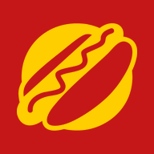

Club Godogos
La pantalla del club necesita internet para registrar visitas. Revisa el wifi de la terminal y vuelve a intentar.
Mientras tanto, anota el WhatsApp en papel y regístralo cuando vuelva la señal. No pierdas al cliente.